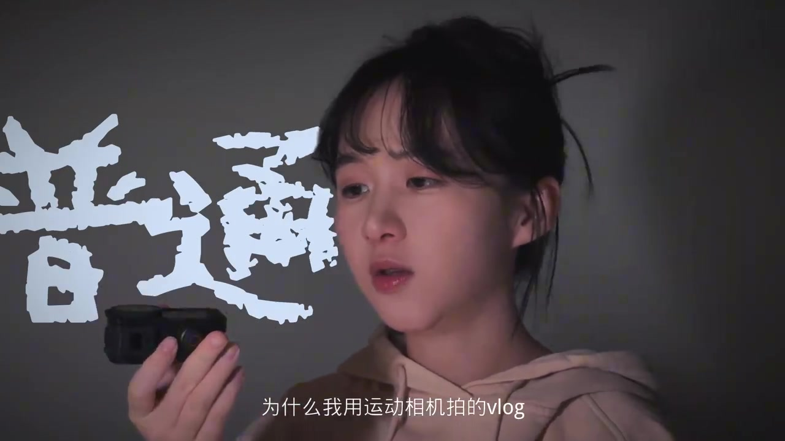
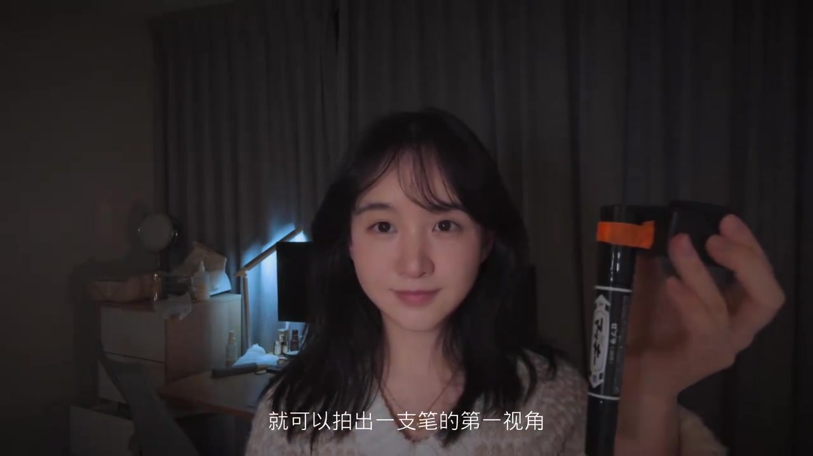
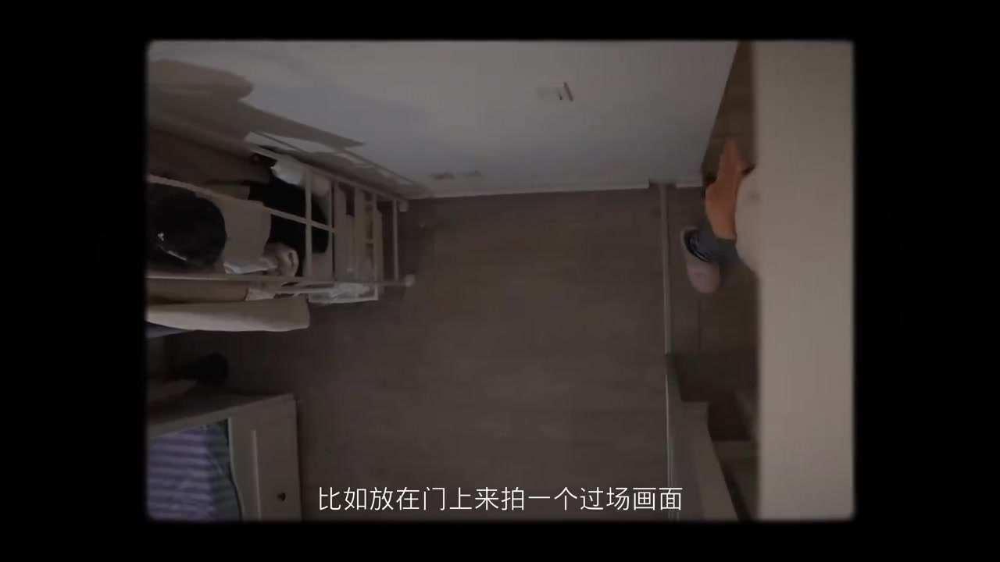
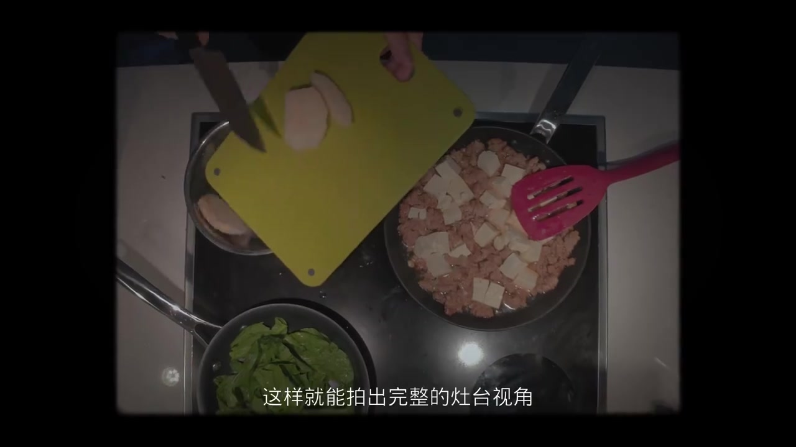
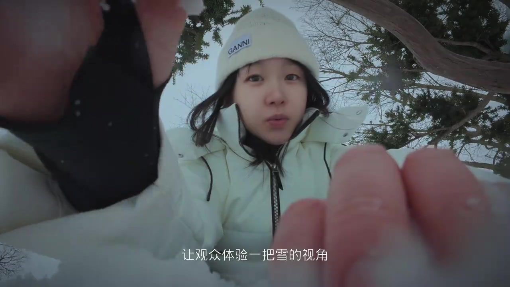
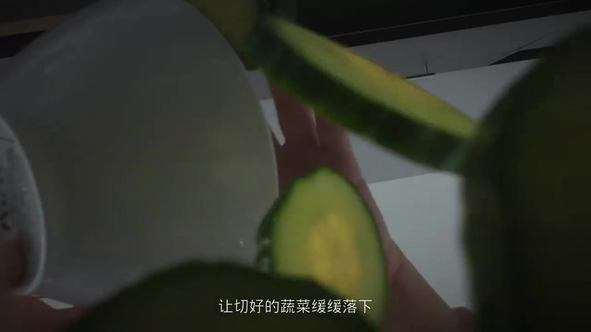
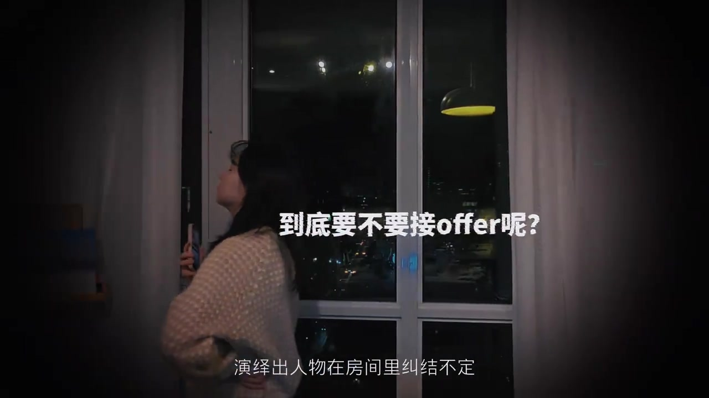
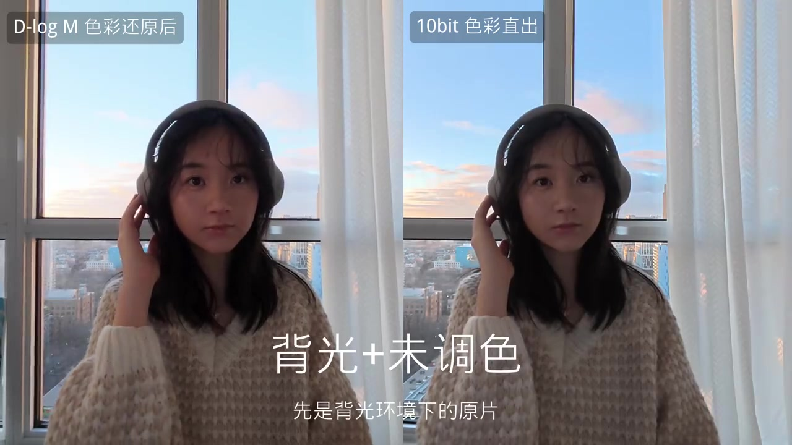

开场：又普通又无聊，算了不拍了
灯光偏暗的室内，作者拿着黑色运动相机，画面左侧叠着大大的「普通」二字。她对着镜头抱怨：为什么用运动相机拍的 vlog 又普通又无聊——然后宣布算了，不拍了。

几秒后，另一个人接过话头：「你不要了吗？这可是 ACTION 5 Pro 啊。」字幕清楚打出型号，小剧场把「吃灰的运动相机」立为痛点，再过渡到具体玩法。
说明：作者昵称在 yt-dlp 元数据中缺失（uploader 为 NA）。Whisper 多处误识（如 axin→ACTION、细铁石→钕铁石、油焰机→油烟机、vlogam→D-Log M），叙事以可见字幕与画面为准；文末转录区仍保留全部原始分段。
口播语义 [00:00–00:10]：「为什么我用运动相机拍的vlog又普通又无聊啊」「算了不拍了」「你不要了吗」「这可是ACTION 5 Pro啊」。
技巧一：磁吸物体，拍出「一支笔」的第一视角
第一招很家常：在笔杆上粘两块钕铁石（磁铁），不用相机底座的磁吸，也能让机身贴在笔上，拍出「一支笔」的第一人称视角。灵感来自她发现 iPad 也能被相机吸住。

同理，她把相机磁吸到菜刀上，演示菜刀第一人称视角；画面偏暗，前景能看到打蛋器之类厨具掠过。她提醒：如果比较晃，记得双手扶住。
口播语义 [00:10–00:28]：「在笔杆上粘贴两块钕铁石」「就可以拍出一只笔的第一视角」「同理也可以磁吸在菜刀上」「如果比较晃的话还是记得双手扶住哦」。
Whisper「细铁石」对照语境≈钕铁石/磁铁；「axin 5 Pro」字幕作 ACTION 5 Pro。
技巧二：第三人称放到「平时放不到」的地方
拍 vlog 也要第三人称素材。她建议把相机放到平时想不到的位置，带来新奇感——例如放在门上拍过场：俯视木地板、鞋柜与人的脚步掠过。

还可以吸附在油烟机附近，拍完整灶台视角：案板上的菜片滑进锅里，旁边还有炒肉与青菜。更夸张的是零下二十度把相机埋进雪地，让观众体验「雪的视角」——低角度仰拍戴 GANNI 帽的作者与雪景。


口播语义 [00:28–00:48]：「把相机放在平时放不到的地方」「放在门上」「吸附在油烟机附近」「埋进雪地里」。
技巧三：慢动作——蔬菜落下与水下洗蓝莓
她说留好慢动作模式就能拍很多有趣画面：切好的蔬菜缓缓落下；或者把相机放进水里洗一把蓝莓。画面里黄瓜片悬在空中，前景虚化，节奏一下子变「好玩」。

口播语义 [00:48–00:56]：「留好慢动作模式就能拍出很多有趣的画面」「让切好的蔬菜缓缓落下」「又或者放在水里来洗一把蓝莓」。
技巧四：防抖拿来运镜——遥控车、关键帧、人物跟随
运动相机防抖强，她主张拿来做运镜。若有遥控小车，就把相机固定上去；她还演示在手机编程界面输入「遇到障碍物就停止」一类指令，一个人也能拍推拉镜头。后期用关键帧放大，可做出更戏剧化的变焦效果（她说关键帧细节见上一个视频）。
再利用人物跟随，一个人也能运镜：在家里演绎角色在房间里纠结不定、来回踱步——画面叠着大字「到底要不要接offer呢？」。

口播语义 [00:56–01:24]：「运动相机这么防抖当然要拿来运镜」「遥控小车」「推拉等镜头」「关键帧放大」「人物跟随」「来回踱步」。
Whisper「吸去刻刻变焦」≈吸睛/戏剧化的刻意变焦；「第七视频」字幕语境更像「上一个视频」；「躲步」≈踱步。
技巧五：D-Log M 灰片——调色空间与直出选择
Action 5 Pro 带有 D-Log M 灰片模式，色彩调整空间更大。她做了背光环境下的对比：左侧「D-Log M 色彩还原后」，右侧「10bit 色彩直出」，中间大字「背光 + 未调色」。结论是：D-Log M 在调色时更容易保住高光和暗部细节。

若不会调色、只想直出，她建议试试 HLG / 10bit 一类直出功能。用 D-Log M 调色前要先色彩还原：最简单的方式是打开 DJI Mimo App，点「色彩还原」按键（画面里有橙色箭头指向 LOG 图标）。
口播语义 [01:24–01:56]：「D-Log M 的灰片模式」「更容易展现高光和暗部的细节」「不会调色只想直出就试 10bit」「去 DJI Mimo 点色彩还原」。
Whisper「vlogam/挥辟」字幕与画面标签对应 D-Log M 灰片；「hlog是bit」对照画面「10bit 色彩直出」；「dji memo」≈ DJI Mimo。
收尾：利用率上来了，相机还给我吧
作者问：这样一来相机利用率是不是大大提升了？朋友惊讶「这么好用吗？」——作者立刻接梗：「那你还是还给我吧。」小剧场闭环，五个技巧落在「别让运动相机吃灰」上。
口播 [01:56–02:03]：「这样一来你的相机利用率是不是就大大提升了」「这么好用吗」「那你还是还给我吧」。
纪实收束
五条线按时间依次出现：物体磁吸 POV → 非常规第三人称机位 → 慢动作 → 防抖运镜（车/关键帧/跟随）→ D-Log M 与直出取舍。HTML 保留过程与画面；结构化取舍与边界见同条「理性分析」SVG。